Веб-технологияларға кіріспе
Веб-технология — бұл интернет желісі арқылы ақпараттарды беру, сақтау және өңдеу үшін қолданылатын бағдарламалық және техникалық құралдар мен әдістердің жиынтығы. Веб-технологиялар интернетке немесе жергілікті желілерге қосылған құрылғылар арасында байланыс орнатуға мүмкіндік береді, сонымен қатар веб-сайттарды құру, басқару және пайдалану үшін қажет барлық құралдарды қамтиды.
Веб-технологияның негізгі элементтері:
Интернет — бұл дүниежүзілік ақпараттық желі, онда әртүрлі құрылғылар мен компьютерлер бір-бірімен байланысып, ақпарат алмасуға мүмкіндік береді. Интернетте сайттар, қолданбалар, әлеуметтік желілер және басқа да қызметтер бар. Бұл қазіргі таңда бүкіл әлемді байланыстыратын ең үлкен желі болып табылады.Интернеттің негізгі функциялары - ақпарат алмасу, веб-сайттарға қол жеткізу, электронды пошта арқылы хат жазу және алу, онлайн ойындар мен қызметтер.WWW (World Wide Web) — бұл Интернеттің бөлігі, ол гипермәтіндер мен мультимедиялық ақпараттарды байланыстыратын жүйе. WWW арқылы сіз браузердің көмегімен веб-сайттарға кіріп, ақпаратты көре аласыз.WWW және интернеттің айырмашылығы: Веб-сайт (Website) — бұл интернетте орналасқан және белгілі бір ақпаратты немесе қызметті ұсынатын беттердің жиынтығы. Веб-сайттар әдетте HTML, CSS, JavaScript тілдерінде жасалады және оларды браузер арқылы көруге болады.Веб-сайттардың түрлері: Браузерлер (Browsers) — бұл веб-сайттарды көру үшін қолданылатын бағдарламалық құрал. Браузерлер веб-беттерді ашу, оларды көрсету және қолданушылардың веб-сайттармен өзара әрекеттесуіне мүмкіндік береді.Ең танымал браузерлер: Google Chrome, Mozilla Firefox, Microsoft Edge, Safari, Opera. Мысалы, Google Chrome браузері арқылы интернетте серфинг жасап, әртүрлі сайттарға кіре аласыз.Веб-серверлер мен клиент-сервер архитектурасы — бұл интернеттегі веб-сайттардың барлық мәліметтерін сақтайтын және клиенттің сұранысына жауап беретін сервер. Веб-серверлер HTTP (Hypertext Transfer Protocol) арқылы ақпаратты жібереді.Клиент-сервер архитектурасы: Клиент — бұл интернет арқылы серверге сұраныс жіберетін құрылғы (мысалы, веб-браузер). Сервер — бұл сұраныстарды қабылдап, қажетті мәліметтерді жіберетін жүйе.URL (Uniform Resource Locator) — бұл веб-сайттың нақты мекен-жайын білдіретін стандартталған адрес. URL арқылы веб-бетке тікелей қатынасуға болады.URL құрылымы: Домен аты: www.google.comЖол (path): /search?q=webIP-адрес (Internet Protocol Address) — бұл интернет желісінде әрбір құрылғыға берілетін ерекше сандық мекен-жай. Ол құрылғының интернетке қосылуын қамтамасыз етеді.IP-адрес түрлері:
Веб-технологиялардың маңызды аспектілері: веб-сайттар мен қолданбалар қолданушылармен өзара әрекеттесуге мүмкіндік береді. Мысалы, JavaScript көмегімен веб-беттер динамикалық болып, қолданушының іс-әрекетіне жауап береді (кнопкаларды басу, форма толтыру және т.б.).2. Қауіпсіздік: Веб-технологиялар қазіргі әлемде ақпарат алмасудың негізгі құралы болып табылады. Бұл технологиялар интернет арқылы байланыс орнатуды, мәліметтерді іздеуді, сайттарға кіруді және олармен жұмыс істеуді жеңілдетеді. Технологиялардың негіздерін түсіну интернетті тиімді пайдалану үшін өте маңызды.3. Мобильді үйлесімділік: қазіргі уақытта веб-сайттар тек компьютерлерде ғана емес, мобильді құрылғыларда да дұрыс жұмыс істеуі қажет. Бұл үшін responsive design (қолданушы құрылғысына байланысты бейімделген дизайн) принципі қолданылады.4. Веб-қосымшалар: интернет арқылы жұмыс істейтін бағдарламалар. Мысалға, Google Docs, Trello сияқты қосымшалар, олар серверде орналасып, қолданушылардың браузерлерінде жұмыс істейді.
Веб-технологиялар қазіргі әлемде ақпарат алмасудың негізгі құралы болып табылады. Бұл технологиялар интернет арқылы байланыс орнатуды, мәліметтерді іздеуді, сайттарға кіруді және олармен жұмыс істеуді жеңілдетеді. Технологиялардың негіздерін түсіну интернетті тиімді пайдалану үшін өте маңызды.
Тест тапсырмалары
Тестті тексеру
HTML негіздері
HTML тілі деген не? — веб-беттердің құрылымын анықтайтын, веб-құжаттарды форматтайтын және құрылымдайтын белгілеу тілі. HTML-дің негізгі мақсаты — веб-беттің мазмұнын браузерге түсінікті етіп көрсету және оның құрылымын анықтау.
HTML тілі құрылымы
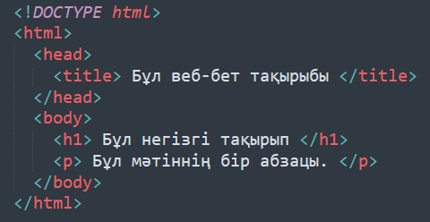
Негізгі HTML тегтері және олардың қолданылуы
1. <html> және </html>:
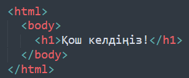
2. <head> және </head>: Бұл тег веб-беттің басын сипаттайды, бірақ ол браузерде көрсетілмейді. Әдетте, мета-ақпарат, сілтемелер және стильдер осы тегтің ішінде болады. Мысал:
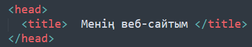
3. <body> және </body>:
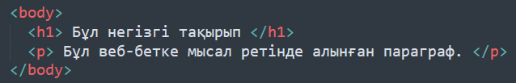
4. <h1> ... <h6>: Тақырыптар
5. <p>: Пара
<p> Бұл параграфтың мәтіні. </p>
граф6. : Сілтеме
<a href="https://www.example.com"> Example сайт </a>
7. <img>: Сурет
<img src="image.jpg" alt="Бұл сурет сипаттамасы">
8. <ul>, <ol>, <li>: Тізімдер
9. <table>, <tr>, <td>: Кестелер
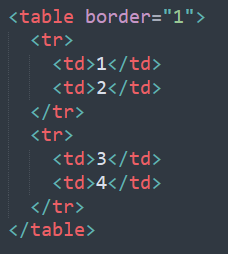
10. <form>, <input>, <button>: Форма
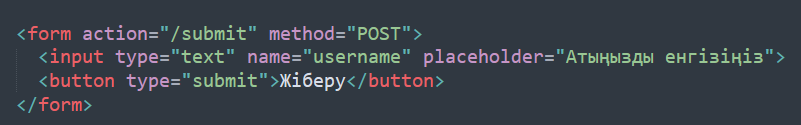
HTML құжатының басты құрылымын таңдаңыз.
</head> <body> </body> </html></label><br>
<input type="radio" id="task1_option2" name="task1" value="2">
<label for="task1_option2"><!DOCTYPE html> <head> <body> </body> </html></label><br>
<input type="radio" id="task1_option3" name="task1" value="3">
<label for="task1_option3"><html> <body> <head> </head> </html></label>
</div>
<!-- Задача 2 -->
<div class="task">
<p>HTML құжатының ішінде қандай тег веб-беттің атауын көрсетеді?</p>
<input type="radio" id="task2_option1" name="task2" value="1">
<label for="task2_option1"><title></label><br>
<input type="radio" id="task2_option2" name="task2" value="2">
<label for="task2_option2"><h1></label><br>
<input type="radio" id="task2_option3" name="task2" value="3">
<label for="task2_option3"><p></label>
</div>
<!-- Задача 3 -->
<div class="task">
<p>HTML құжатының денесін анықтайтын тегті таңдаңыз.</p>
<input type="radio" id="task3_option1" name="task3" value="1">
<label for="task3_option1"><body></label><br>
<input type="radio" id="task3_option2" name="task3" value="2">
<label for="task3_option2"><html></label><br>
<input type="radio" id="task3_option3" name="task3" value="3">
<label for="task3_option3"><head></label>
</div>
<!-- Задача 4 -->
<div class="task">
<p>HTML құжатының ішінде сілтемелер үшін қолданылатын тегті таңдаңыз.</p>
<input type="radio" id="task4_option1" name="task4" value="1">
<label for="task4_option1"><a></label><br>
<input type="radio" id="task4_option2" name="task4" value="2">
<label for="task4_option2"><img></label><br>
<input type="radio" id="task4_option3" name="task4" value="3">
<label for="task4_option3"><table></label>
</div>
<!-- Задача 5 -->
<div class="task">
<p>HTML-де тізімдер үшін қандай тегтер қолданылады?</p>
<input type="radio" id="task5_option1" name="task5" value="1">
<label for="task5_option1"><ul> және <ol></label><br>
<input type="radio" id="task5_option2" name="task5" value="2">
<label for="task5_option2"><ol> және <li></label><br>
<input type="radio" id="task5_option3" name="task5" value="3">
<label for="task5_option3"><li> және <table></label>
</div>
<div style="text-align: center; margin-top: 20px;">
<button onclick="checkTest()">Тестті тексеру</button>
</div>
<script>
// Функция для проверки правильности ответов
function checkTest() {
let score = 0;
// Проверка 1
if (document.getElementById("task1_option1").checked) score++;
// Проверка 2
if (document.getElementById("task2_option1").checked) score++;
// Проверка 3
if (document.getElementById("task3_option1").checked) score++;
// Проверка 4
if (document.getElementById("task4_option1").checked) score++;
// Проверка 5
if (document.getElementById("task5_option1").checked) score++;
// Вывод результата
let resultText = `Сіздің балыңыз: ${score} / 5`;
if (score === 5) {
resultText += " - Керемет! Барлық жауаптарыңыз дұрыс!";
} else {
resultText += " - Кейбір жауаптарыңыз қате, қайта тексеріп шығыңыз.";
}
document.getElementById("testResult").innerText = resultText;
}
</script>
<div class="task">
<h3>Тапсырма 1: Тізім құру</h3>
<p>Қарапайым тізімді жасау үшін HTML кодын жазыңыз. Тізімде 3 элемент болу керек: "Алма", "Алмұрт", "Банан".</p>
</div>
<!-- Задача 2: Ссылка -->
<div class="task">
<h3>Тапсырма 2: Сілтеме жасау</h3>
<p>HTML кодын жазып, "Google" сайтына сілтеме жасаңыз. Сілтемені жаңа терезеде ашу керек.</p>
</div>
<!-- Задача 3: Изображение -->
<div class="task">
<h3>Тапсырма 3: Сурет қосу</h3>
<p>HTML кодында суретті қосыңыз. Сурет файлындағы жолды `src="image.jpg"` деп көрсету керек. Суреттің атауын да қосыңыз (alt).</p>
</div>
<!-- Задача 4: Таблица -->
<div class="task">
<h3>Тапсырма 4: Кесте жасау</h3>
<p>HTML кодында 2 жол мен 3 бағаннан тұратын кесте жасаңыз. Бірінші жолда "Аты", "Жасы", "Қаласы" деп жазылсын. Екінші жолда аттарды толтырыңыз.</p>
</div>
<!-- Задача 5: Формалар -->
<div class="task">
<h3>Тапсырма 5: Форманы жасау</h3>
<p>HTML кодында қарапайым форма жасаңыз, онда пайдаланушыдан аты мен email сұралсын. Форма "submit" батырмасымен аяқталуы керек.</p>
</div>
</section>
<section id="lesson3" class="lesson-content">
<h2>Мәтінді пішімдеу</h2>
<p>HTML-де мәтінді пішімдеу — бұл веб-беттің мазмұнын қолданушыға түсінікті әрі эстетикалық жағымды етіп көрсету үшін маңызды қадам. Мәтіннің түрін, көлемін, түсін және орналасуын реттеу арқылы оны ыңғайлы және тиімді етуге болады. Бұл бөлімде абзацтар, тақырыптар, қаріп параметрлері, тізімдер құру сияқты негізгі пішімдеу құралдары қарастырылады.</p>
<p><b>1. Абзацтар (Paragraphs)</b> <br>Абзац мәтінді логикалық блоктарға бөлу үшін қолданылады. HTML-де абзацты көрсету үшін <p> тегі қолданылады. Мысал:</p>
<div class="code-box">
<code>
<p>Бұл бірінші абзацтың мәтіні.</p>
<p>Бұл екінші абзацтың мәтіні.</p>
</code>
</div>
<p>Абзацтар мәтінді бөліп, оқуға жеңіл етеді.<br>Әрбір <p> тегі жаңа абзацты білдіреді.</p>
<p><b>2. Тақырыптар (Headings)</b><br>Тақырыптар веб-беттің құрылымын жасау үшін маңызды рөл атқарады. HTML-де тақырыптар <h1> мен <h6> тегтері арқылы белгіленеді. <h1> — ең басты тақырып, ал <h6> — ең кіші тақырып. Мысал:</p>
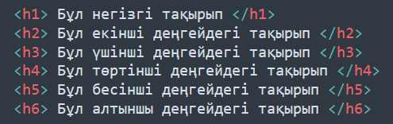
<p>Тақырыптар мәтінді ұйымдастыру үшін қолданылады, олар веб-беттің құрылымын айқындайды.<br>Әрбір <h1> - <h6> тегі тақырыптың маңызды дәрежесін көрсетеді.</p>
<p><b>3. Қаріп параметрлері (Font Properties)</b><br>HTML-де мәтіннің түрін, өлшемін, түсін және басқа да қасиеттерін өзгерту үшін CSS (Cascading Style Sheets) пайдаланылады. Қаріп параметрлерін орнату үшін style атрибутын қолдануға болады. Мысал:</p>
<div class="code-box">
<code>
<p style="font-family: Arial, sans-serif; font-size: 16px; color: blue;"> Бұл мәтін көк түспен жазылған. </p>
</code>
</div>
<p><b>Негізгі қаріп параметрлері:<br>font-family </b>— қаріп түрі (мысалы, Arial, Times New Roman).<br><b>font-size </b>— қаріп өлшемі (мысалы, 16px).<br><b>color </b>— қаріп түсі (мысалы, blue, #FF5733).
<p><b>Қосымша мысал:</b></p>
<div class="code-box">
<code>
<p style="font-family: 'Courier New', monospace; font-size: 18px; color: red; font-weight: bold;"> <br>Қызыл және қалың қаріппен жазылған мәтін.
</p>
</code>
</div>
<p><b>font-weight </b>— қаріптің қалыңдығы (мысалы, bold, normal).<br><b>font-style </b>— қаріптің стилі (мысалы, italic, normal).</p>
<p><b>4. Тізімдер құру (Lists)</b><br>Тізімдер веб-беттегі ақпаратты ұйымдастырудың тиімді әдісі болып табылады. HTML-де екі негізгі тізім түрі бар: ретсіз тізім (unordered list) және реттелген тізім (ordered list).</p>
<p><b>Ретсіз тізім (Unordered List)</b><br>Ретсіз тізімде әрбір элемент <li> тегтерімен белгіленеді және олар көбінесе маркерлермен көрсетіледі. <br>Мысал:</p>
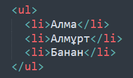
<p><ul> тегі — ретсіз тізімді білдіреді.<br><li> тегі — тізімнің әрбір элементін білдіреді.</p>
<p><b>Реттелген тізім (Ordered List)</b><br>Реттелген тізімде әрбір элемент нөмірленеді немесе әріптермен көрсетіледі. Ол үшін <ol> тегі пайдаланылады. <br>Мысал:</p>
<img src="20.png" width="270" height="150">
<p><ol> тегі — реттелген тізімді білдіреді.<br><li> тегі — тізімнің әрбір элементін білдіреді.</p>
<p><b>Тізімдер ішінде қосымша тізімдер жасау:</b></p>
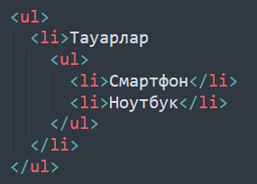
<p>Бұл мысалда, <ul> ішіндегі тізімдер қосымша тізімдер ретінде орналасады.</p>
<p><b>5. Мәтінді туралау және арақашықтық (Text Alignment & Spacing)</b><br>CSS көмегімен мәтінді туралау және мәтіндер арасындағы арақашықтықты басқаруға болады. Мысал:</p>
<div class="code-box">
<code>
<p style="text-align: center;">Бұл мәтін ортасында орналасқан. </p><br><p style="line-height: 1.5;">Бұл мәтіннің жол аралығы 1.5 есе үлкен.</p>
</code>
</div>
<p><b>Негізгі параметрлер:<br>text-align: </b>left, right, center, justify.<br><b>line-height:</b> жол аралықтың биіктігі.</p>
<p>HTML-де мәтінді пішімдеу негізгі веб-беттерді құруда маңызды роль атқарады. Тақырыптарды, абзацтарды, тізімдерді және қаріп параметрлерін дұрыс пайдалану веб-беттің оқылуын және түсінікті болуын қамтамасыз етеді.<br><b>HTML пішімдеудің негізгі элементтері:</b></p>
<li>Абзацтар мен тақырыптарды қолдану арқылы мәтінді жүйелеу.</li>
<li>Қаріп параметрлері арқылы мәтіннің түрін, көлемін, түсін және басқа қасиеттерін реттеу.</li>
<li>Тізімдер арқылы ақпаратты түсінікті және құрылымды түрде ұсыну.</li>
</section>
<section id="lesson4" class="lesson-content">
<h2>Суреттерді енгізу</h2>
<p>HTML құжатына суреттерді қосу — веб-беттердің мазмұнын байытатын және оны визуалды түрде көрнекі ететін маңызды процесс. HTML-де суреттерді енгізу үшін <img> тегін қолданамыз. Бұл тег суреттерді қосып, олардың қасиеттерін орнатуға мүмкіндік береді.</p>
<p><b>1. <img> тегін қолдану</b><br> <img> тегі HTML-де сурет қосу үшін қолданылады. Бұл тегтің өзі жабылмайды, яғни бір ғана бастапқы тег жеткілікті.</p>
<p><b>Негізгі синтаксис:</b> <br>
<div class="code-box">
<code>
<img src="сурет_файлының_жолы" alt="сурет_сипаттамасы">
</code>
</div>
<p><b>src (source) атрибуты </b>— суреттің жолын немесе URL мекен-жайын көрсетеді.<br><b>alt (alternative text) атрибуты </b>— сурет көрсетілмеген жағдайда немесе экран оқырманы қолданатын кезде сурет туралы сипаттама береді.<br> Мысал:<br></p>
<div class="code-box">
<code>
<img src="images/photo.jpg" alt="Бұл табиғаттың керемет суреті">
</code>
</div>
<p><b>2. Суреттердің өлшемін орнату</b><br>Суреттің өлшемін өзгерту үшін width және height атрибуттары қолданылады. Бұл атрибуттар пиксельдермен (px) өлшенеді.<br>Мысал:</p>
<div class="code-box">
<code>
<img src="image.jpg" alt="Сурет" width="500" height="300">
</code>
</div>
<p>Бұл суретке 500 пиксель ені мен 300 пиксель биіктігін орнатады.</p>
<p><b>3. Суреттің максималды өлшемін орнату</b><br>Суреттің ең үлкен өлшемін орнату үшін max-width және max-height CSS қасиеттерін қолдануға болады. Бұл қасиеттер суреттің өлшемін белгілі бір шектен аспайтын етіп реттейді.<br>Мысал:</p>
<div class="code-box">
<code>
<img src="image.jpg" alt="Сурет" style="max-width: 100%; max-height: 400px;">
</code>
</div>
<p>Бұл суреттің ені веб-беттің еніне бейімделеді, бірақ биіктігі 400px-ден аспайды.</p>
<p><b>4. Суреттің орналасуын орнату</b><br>Суреттің орналасуын CSS арқылы басқара аламыз. Суреттің орналасуын өзгерту үшін float және margin сияқты қасиеттер қолданылады. Мысал:</p>
<div class="code-box">
<code>
<img src="image.jpg" alt="Сурет" style="float: left; margin-right: 20px;">
</code>
</div>
<p>Бұл сурет бетте солға қарай орналасады және оның оң жағында 20px бос орын қалады.</p>
<p><b>5. Суреттің байланыс жасау үшін қолданылуы</b><br>Суретке сілтеме қосу үшін <a> тегін қолдануға болады. Осылайша, суретті басқан кезде қолданушы басқа веб-бетке өтеді. Мысал:</p>
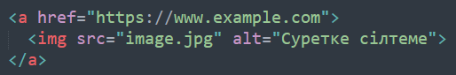
<p>Бұл жағдайда сурет басылғанда қолданушы https://www.example.com сайтына өтеді.</p>
<p><b>6. Суреттің альт-тегін пайдалану</b><br>Суреттің alt атрибуты сурет туралы мәтіндік сипаттама береді. Бұл атрибут веб-сайтқа қолжетімділікті жақсартады, әсіресе экран оқырмандарын қолданатын адамдар үшін маңызды. Мысал:</p>
<div class="code-box">
<code>
<img src="logo.png" alt="Компания логотипі">
</code>
</div>
<p>Бұл сурет жүктелмеген жағдайда "Компания логотипі" мәтіні көрсетіледі.</p>
<p><b>7. Бейнемазмұнға арналған суреттер</b><br>Суреттер тек дәстүрлі суреттер үшін ғана емес, бейнемазмұндарды көрсету үшін де қолданылады. Мысалы, видео немесе анимацияның алдын ала қарау бейнесі ретінде. Мысал:</p>
<div class="code-box">
<code>
<img src="preview.jpg" alt="Видеоны алдын ала қарау" title="Видеоны қарау үшін басыңыз">
</code>
</div>
<p>Бұл бейнемазмұнның алдын ала қарау суретін көрсетеді.</p>
<p><b>8. Суреттің шекарасын орнату</b><br>border CSS қасиеті арқылы суреттің айналасына шекара орнатуға болады. Мысал:</p>
<div class="code-box">
<code>
<img src="image.jpg" alt="Сурет" style="border: 2px solid black;">
</code>
</div>
<p>Бұл суреттің айналасында 2px қалыңдықта қара түсті шекара пайда болады.</p>
<p><b>9. Суретті орталауға орнату</b><br>Суреттің ортасында орналасуын қамтамасыз ету үшін CSS арқылы суретті центрлеу әдісін қолдануға болады. Мысал:</p>
<div class="code-box">
<code>
<img src="image.jpg" alt="Сурет" style="display: block; margin-left: auto; margin-right: auto;">
</code>
</div>
<p>Бұл әдіс суретті горизонтальды түрде орталап көрсетеді.</p>
<p>HTML құжатына суреттерді қосу және олардың қасиеттерін орнату — веб-бетке визуалдық мазмұн қосып, оны көрнекі әрі қызықты ету үшін маңызды. Суреттерді пішімдеудің әртүрлі әдістері арқылы, біз веб-сайттың құрылымын және қолданушының тәжірибесін жақсартуға болады: </p>
<li> <img> тегі арқылы суретті қосу;</li>
<li>src және alt атрибуттары арқылы суреттің деректері мен сипаттамасын көрсету;</li>
<li>CSS көмегімен суреттің өлшемдерін, орналасуын және шекарасын реттеу.</li>
</section>
<section id="lesson5" class="lesson-content">
<h2>Гиперсілтемелер</h2>
<p><b>Гиперсілтеме (hyperlink) </b>— бұл веб-беттен басқа бетке немесе басқа ресурстарға өтуге мүмкіндік беретін элемент. Гиперсілтемелер мәтін немесе сурет ретінде көрініп, қолданушыларға бір сайттан екінші сайтқа, немесе бір парақтан екінші параққа көшу мүмкіндігін береді. HTML-де гиперсілтемелер <a> тегін пайдалану арқылы жасалады.</p>
<p><b>1. Сілтемелерді құру</b><br>Гиперсілтеме жасау үшін HTML-де <a> тегін қолданамыз. Бұл тегтің href атрибуты сілтеменің бағытын көрсетеді. <br><b>Негізгі синтаксис:</b></p>
<p><a href="сілтеме_мекенжайы"> Сілтеменің мәтіні </a></p>
<p>href атрибуты — сілтеменің мекен-жайы. Бұл жерде веб-сайттың URL немесе жергілікті файлдың жолы көрсетіледі.<br>Сілтеменің мәтіні — бұл сілтеме ретінде көрінетін мәтін.<br>Мысал:</p>
<div class="code-box">
<code>
<a href="https://www.example.com"> Example сайтына өту </a>
</code>
</div>
<p>Бұл сілтеме пайдаланушыны example.com сайтына апарады.</p>
<p><b>2. Ішкі және сыртқы сілтемелер<br>Ішкі сілтемелер </b>— бұл бір веб-сайт ішінде бір парақтан екінші параққа өтуді қамтамасыз етеді. <br><b>Сыртқы сілтемелер </b>— бұл басқа веб-сайттарға немесе сыртқы ресурстарға сілтеме жасайды.</p>
<p><li>Ішкі сілтемелер:<br>Ішкі сілтеме бір сайт ішінде басқа параққа өтуге мүмкіндік береді. Мұндай сілтемені жасау үшін, сілтеменің бағыты ретінде веб-сайттың ішкі файлдарының аттарын пайдаланамыз. Мысалы:</p></li>
<div class="code-box">
<code>
<a href="index.html"> Басты бетке оралу </a>
</code>
</div>
<p>Бұл сілтеме пайдаланушыны осы сайттың басты бетіне апарады.</p>
<p><li>Сыртқы сілтемелер:<br>Сыртқы сілтеме басқа веб-сайтқа немесе сыртқы ресурстарға бағыттайды. Әдетте, сыртқы сілтемелердің URL мекенжайы толық көрсетіледі. Мысал:</li></p>
<div class="code-box">
<code>
<a href="https://www.wikipedia.org"> Wikipedia сайтына өту </a>
</code>
</div>
<p>Бұл сілтеме пайдаланушыны Wikipedia сайтынан басқа веб-сайтқа апарады.</p>
<p><b>3. Сілтемелерді жаңа терезеде ашу</b><br>Егер сілтемені жаңа терезеде немесе жаңа қойындыда ашқыңыз келсе, <b>target="_blank" </b>атрибутын қосу керек. Мысалы:</p>
<div class="code-box">
<code>
<a href="https://www.example.com" target="_blank"> Example сайтына жаңа терезеде өту </a>
</code>
</div>
<p>Бұл сілтеме пайдаланушыны жаңа терезеде example.com сайтына апарады.</p>
<p><b>4. Сілтемелерде суреттер қолдану</b><br>Сілтемелердің ішіне суреттерді де қосуға болады. Бұл үшін <img> тегін <a> тегі ішінде қолданамыз. Мысалы:</p>
<div class="code-box">
<code>
<a href="https://www.example.com">
<img src="image.jpg" alt="Сурет сипаттамасы">
</a>
</code>
</div>
<p>Бұл сілтеме суретке басқан кезде пайдаланушыны example.com сайтына апарады.</p>
<p><b>5. Ішкі беттер арасындағы сілтемелер (Якорь сілтемелері)</b><br>Якорь сілтемелері бір парақ ішінде басқа бөлімге бағыттау үшін қолданылады. Бұл сілтемені жасау үшін <a> тегінің id атрибуты мен href атрибутын бірге қолданамыз.</p>
<p><b>Қадам 1: Якорь тегімен бөлімді анықтау</b><br><h2 id="section1"> Бұл бірінші бөлім </h2></p>
<p><b>Қадам 2: Якорь сілтемесін жасау</b><br><a href="#section1"> Бұл бірінші бөлімге өту </a></p>
<p>Бұл сілтеме пайдаланушыны section1 идентификаторымен белгіленген бірінші бөлімге апарады.</p>
<p><b>6. Сілтемелердің көрінісін өзгерту</b><br>Сілтемелердің көрінісін CSS арқылы өзгертуге болады. Мысалы, сілтемелерді түстері немесе астын сызылғаны бойынша өзгертуге болады. Мысалы:</p>
<div class="code-box">
<code>
<a href="https://www.example.com" style="color: red; text-decoration: none;"> Example сайтына өту </a>
</code>
</div>
<p>Бұл сілтеменің түсі қызыл болып, астын сызбауды көрсетеді.</p>
<p><b>Қосымша CSS стилі:</b></p>
<div class="code-box">
<code>
a {
color: blue;
text-decoration: underline;
}
</code>
</div>
<p>Бұл CSS стилі барлық сілтемелерге көк түсті және астын сызылған қасиеттерін қосады.</p>
<p>Гиперсілтемелер — бұл веб-беттерді өзара байланыстыратын және пайдаланушыларға интернет арқылы еркін қозғалу мүмкіндігін беретін маңызды элементтер. HTML-де гиперсілтемелерді құру үшін <a> тегін пайдаланып, ішкі және сыртқы сілтемелер жасауға болады. Сондай-ақ, сілтемелерді жаңа терезеде ашу, суреттермен және якорь сілтемелерімен жұмыс істеу әдістері де маңызды.<br>Негізгі сілтемелер түрлері:
<li>Ішкі сілтемелер — веб-сайт ішінде парақтар арасындағы байланыс.</li>
<li>Сыртқы сілтемелер — басқа сайттарға немесе сыртқы ресурстарға сілтемелер.</li>
<li>корь сілтемелері — бір бет ішіндегі бөлімдер арасындағы сілтемелер.</li></p>
</section>
<section id="lesson6" class="lesson-content">
<h2>Кестелер</h2>
<p><b>Кесте деген не?<br>Кесте </b>— бұл мәліметтерді жолдар мен бағандар түрінде ұйымдастырудың ең тиімді тәсілі. Веб-беттерде кестелер көбінесе деректерді немесе ақпаратты құрылымдалған түрде көрсету үшін қолданылады. HTML-де кестелерді құру үшін арнайы тегтер мен атрибуттар қолданылады.<br>HTML-де кестені құру үшін <table> тегін қолданамыз. Кестелер әрқашан жолдар мен бағандардан тұрады, ал жолдар мен бағандар белгілі бір тегтермен белгіленеді.</p>
<p><b>1. Кестелерді құру</<br>HTML-де кестені құру үшін негізгі тегтер:<br><table> — кестенің басталуы.<br><tr> — кесте жолы (table row).<br><th> — кесте тақырыбы (table header), яғни бағандардың аттары.<br><td> — кесте ұяшығы (table data), яғни жолдағы мәліметтер.</p>
<p><b>Негізгі синтаксис:</b></p>
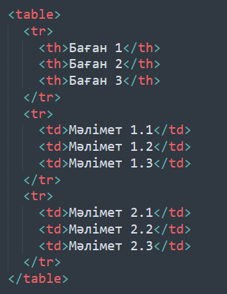
<p>Бұл кодтың нәтижесінде қарапайым кесте құрылады:</p>
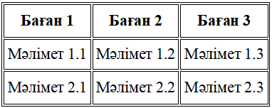
<p><b>2. Кесте жолдары мен бағандар қосу<br>Жолдар қосу:</b><br><tr> — жолды анықтайды. Әрбір <tr> тегінің ішінде <th> немесе <td> тегтері болады.<br><b>Бағандар қосу:</b><br><th> — кестенің тақырыптық бағандарын анықтайды. Бұл тег әдетте мәтінді қалың және ортасына тураланған түрде көрсетеді.<br><td> — кесте ұяшықтары, яғни жолдағы деректер. </p>
<p>Мысалы:</p>
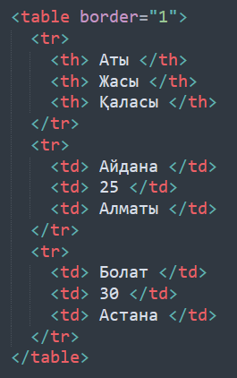
<p>Бұл кесте екі жолдан тұрады. Бірінші жолда бағандардың атауы, екінші және үшінші жолдарда адамдардың мәліметтері.</p>
<p><b>3. Кесте дизайны</b><br>HTML-де кестенің көрінісін өзгерту үшін CSS пайдаланылады. CSS арқылы кестенің шекараларын, түстерін, шрифтін және басқа да параметрлерін өзгертуге болады.</p>
<p><b>Кестенің шекараларын орнату:</b></p>
<div class="code-box">
<code>
<table style="border: 1px solid black; border-collapse: collapse;">
...
</table>
</code>
</div>
<p>border-collapse: collapse; — кесте шекараларын біріктіреді, яғни ұяшықтар арасындағы бөлек шекаралар болмайды.</p>
<p><b>Кестенің шрифтін орнату:</b></p>
<div class="code-box">
<code>
<table style="border: 1px solid black; font-family: Arial, sans-serif;">
...
</table>
</code>
</div>
<p>Бұл кестеде <b>Arial</b> шрифті пайдаланылады.</p>
<p><b>Кестені орталау (Centering the table):</b></p>
<div class="code-box">
<code>
<table style="margin-left: auto; margin-right: auto; border: 1px solid black;">
...
</table>
</code>
</div>
<p>margin-left: auto; margin-right: auto; — кестені горизонтальді түрде орталауға мүмкіндік береді.</p>
<p><b>4. Кесте ұяшықтарының бірігуі</b><br>Кесте ұяшықтарын біріктіру үшін colspan (бағанды біріктіру) және rowspan (жолды біріктіру) атрибуттарын пайдаланамыз.</p>
<p><b>Мысал 1: Бағандарды біріктіру (colspan):</b></p>
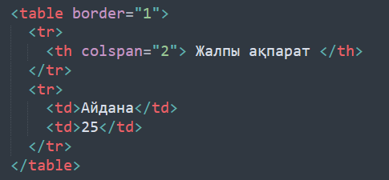
<p>colspan="2" — бірінші ұяшықтың ішіндегі мәтін екі бағанға созылады.</p>
<p><b>Мысал 2: Жолдарды біріктіру (rowspan):</b></p>
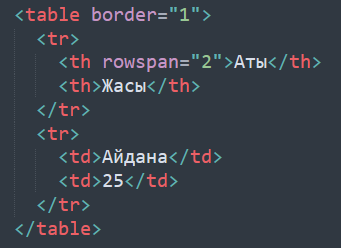
<p>rowspan="2" — бірінші бағанның ұяшығы екі жолға созылады.</p>
<p><b>5. Кестелердің жиектері мен интервалдарын реттеу</<br>HTML-де кестелердің жиектерін және ұяшықтар арасындағы арақашықтықты border-spacing және border қасиеттері арқылы реттеуге болады.</p>
<div class="code-box">
<code>
<table style="border: 1px solid black; border-spacing: 10px;">
...
</table>
</code>
</div>
<p>border-spacing: 10px; — ұяшықтар арасындағы арақашықтықты 10 пиксель етіп орнатады.</p>
<p>HTML-де кестелерді құру — ақпаратты ұйымдастырудың және көрсету тәсілдерінің бірі болып табылады. Кестелердің көмегімен деректерді құрылымдауға, оқуға жеңіл етуге болады. Кестелердің дизайны мен пішімін CSS арқылы басқаруға болады.</p>
</section>
<section id="lesson7" class="lesson-content">
<h2>Формалар</h2>
<p>Формалар — бұл пайдаланушылардан мәліметтер алу үшін веб-беттерде қолданылатын HTML элементтері. Олар түрлі ақпараттарды жинау үшін пайдаланылады, мысалы, атаулар, электрондық пошта мекенжайлары, пікірлер, және басқа да деректер. HTML формалары <form> тегін пайдалану арқылы құрылады, ал әрбір форма элементі арнайы HTML тегтерімен белгіленеді.</p>
<p><b>1. Форманың құрылымы</b><br><form> тегі — бұл веб-бетте мәліметтерді жинауға арналған форма құратын негізгі тег. Форманың ішінде әртүрлі енгізу элементтері, батырмалар және басқа да басқару элементтері болуы мүмкін.</p>
<p><b>Негізгі синтаксис:</b></p>
<div class="code-box">
<code>
<form action="action_адресі" method="POST">
<!-- Форма элементтері осында орналасады -->
</form>
</code>
</div>
<p>action атрибуты — мәліметтерді қайда жіберетінін көрсетеді (әдетте сервердің URL мекенжайы).<br>method атрибуты — мәліметтерді жіберу әдісін көрсетеді, мысалы GET немесе POST.</p>
<p><b>2. Негізгі форма элементтері<br>(a) Текст енгізу өрістері</b><br><input> тегі — бұл пайдаланушының деректерді енгізуіне арналған ең көп қолданылатын элемент. Оны түрлі типтерде қолдануға болады.<br>type="text" — мәтін енгізу үшін.<br>type="email" — электрондық пошта енгізу үшін.<br>type="password" — құпия сөз енгізу үшін.</p>
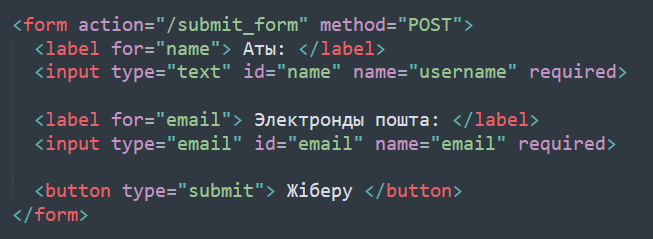
<p><b>(b) Радио батырмалары (Radio buttons)</b><input> тегі радио батырмаларын жасау үшін де қолданылады. Радио батырмалары пайдаланушыға бірнеше опциядан біреуін таңдау мүмкіндігін береді.</p>
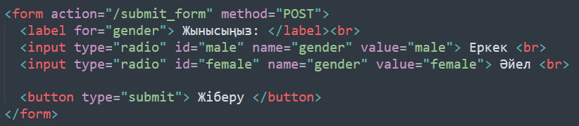
<p><b>(c) Чекбокс (Checkbox)</b><br><input> тегі чекбокс жасау үшін қолданылады. Чекбокс арқылы пайдаланушы бірнеше опцияны таңдай алады.</p>
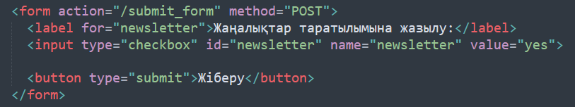
<p><b>(d) Таңдау тізімі (Select list)</<br><select> тегі — бірнеше опция арасынан біреуін немесе бірнешеуін таңдауға арналған тізім құру үшін қолданылады.</p>
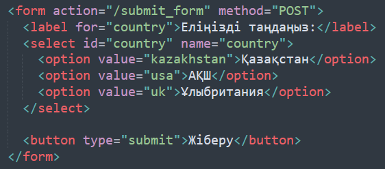
<p><b>(e) Текст аймақтары (Textarea)</<br><textarea> тегі көп жолды мәтін енгізу үшін қолданылады. Бұл элемент бірқатар жолдар мен бағандардан тұратын мәтін аймағын ұсынады.</p>
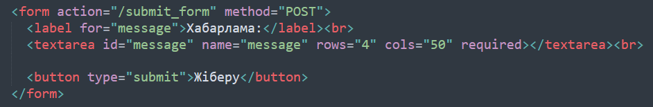
<p><b>3. Форма элементтерін пішімдеу және стильдеу (CSS)</b><br>HTML формаларын көрнекі түрде пішімдеуге болады. CSS көмегімен біз форма элементтерінің өлшемдерін, түстерін, орналасуын және шрифтін реттей аламыз. Мысалы:</p>
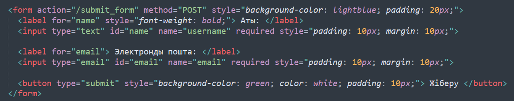
<p>Бұл формаға көк түсті фон, ішкі қаптамалар және жасыл түсті батырма қосады.</p>
<p><b>4. Форма элементтерін тексеру (Validation)</b><br>HTML5 форма элементтерін тексеруді қолдайды, бұл пайдаланушылардың енгізген деректерінің дұрыс болуын қамтамасыз етеді. required, pattern, type атрибуттары арқылы тексерулерді орнатуға болады. Мысал:</p>
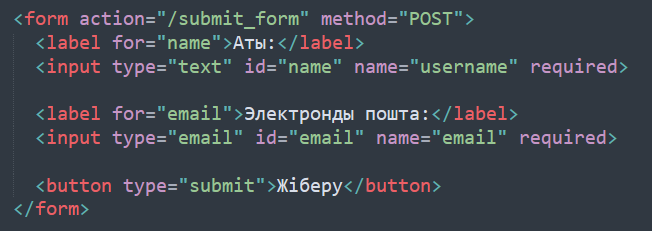
<p>required атрибуты — енгізу өрісін міндетті етеді.<br>type="email" атрибуты — тек электрондық пошта форматында енгізуді талап етеді.</p>
<p>HTML формалары — бұл пайдаланушылардан ақпарат жинаудың маңызды құралы. Формаларды жасау кезінде түрлі енгізу элементтерін (текст, радио батырмалары, чекбокстар, тізімдер және т.б.) пайдаланып, мәліметтерді ыңғайлы түрде жинауға болады. Сонымен қатар, форма элементтерін пішімдеу және стильдеу арқылы оларды әдемі әрі қолданушыға ыңғайлы етуге болады.</p>
</section>
</div>
</div>
<script>
document.querySelectorAll('.lesson-link').forEach(link => {
link.addEventListener('click', (e) => {
e.preventDefault(); // Останавливаем стандартное поведение якоря
const target = e.currentTarget.getAttribute('data-target');
document.querySelectorAll('.lesson-content').forEach(content => {
content.style.display = 'none'; // Скрыть все разделы
});
document.getElementById(target).style.display = 'block'; // Показать нужный раздел
document.querySelectorAll('.arrow').forEach(arrow => {
arrow.innerHTML = '▶'; // Стрелка вправо
});
e.currentTarget.querySelector('.arrow').innerHTML = '▼'; // Активная стрелка вниз
});
});
// Показываем первый раздел при загрузке
document.querySelectorAll('.lesson-content').forEach(content => {
content.style.display = 'none';
});
document.getElementById('lesson1').style.display = 'block';
</script>
</body>
</html>